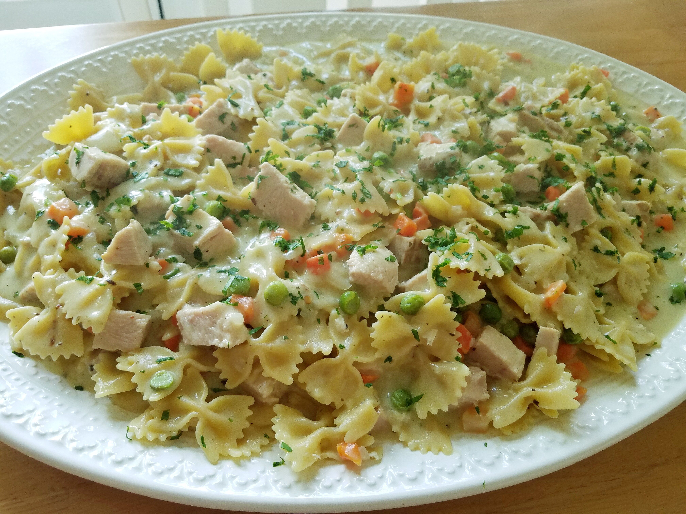

Pasta

Desription
This single-pot meal is the perfect way to use up leftover ham for a weeknight dinner. It's creamy, comforting, and quick-and-easy.
Ingredients
- 1 tablespoon olive oil
- 2 ½ cups cubed fully cooked ham
- ½ cup chopped onion
Steps
- Heat olive oil in a large pot over medium heat. Add ham and onion; saute for about 3 minutes. Add garlic and cook until fragrant, about 30 seconds. Stir in Italian seasoning, red pepper flakes, salt and pepper; cook for 2 minutes.
- Whisk together chicken broth, half-and-half, and flour in a bowl until smooth; pour into the pot. Stir in farfalle pasta, cover, and cook for 15 minutes.
- Add peas and carrots. Cook until pasta is cooked through, about 8 more minutes. Stir in Parmesan cheese and garnish with chopped parsley. Serve immediately.